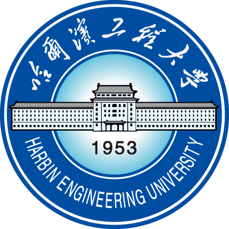

01 / 重点作品 · 双平台联动
对上了
连接内容社区与外卖平台的
双向联动产品原型
让用户在选外卖时查看同款菜品的社区图文与口碑，也能从种草笔记直接找到对应的外卖门店与菜品，减少跨平台重复搜索。
想吃的找得到，想点的看得清。
INTERACTIVE DEMO / 两个 App，一段完整体验
打开原型，亲自走一遍
土木水利 · 智能船舶工程

船舶与海洋工程
连接内容社区与外卖平台的
双向联动产品原型
让用户在选外卖时查看同款菜品的社区图文与口碑，也能从种草笔记直接找到对应的外卖门店与菜品，减少跨平台重复搜索。
想吃的找得到，想点的看得清。
技术方案与验收材料
智能核验工作台
逐项对照需求、技术方案与验收材料，识别未覆盖要求、证据缺口与口径冲突，生成可追溯的待复核清单。
将船员作业经验与设备约束，转化为动态安全边界、产品功能及量化验收判据。
相关提案获 ISO/TC 8 批准立项将数据、模型、参数与评测结果组织为标准任务，串联批量训练、实验对比与失败重跑。
核心原型完成 · 部分功能联调用局部三维地图表达目标占用与运动状态，结合轨迹预测生成风险热区，规划船端实时处理与云端迭代。
参数化仿真场景 + 量化验收方案独立设计风况预测、候选策略推演与评分择优流程，在控制执行前比较姿态风险与泵控投入。
150 组配对仿真 · 累计泵量 −19.85%